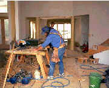

|
DEPARTMENT of ARCHITECTURE & CONSTRUCTION |
|
Welcome to the Department of
Architecture and Construction. 
The architecture and construction industries
encompass  The Department of Architecture and Construction offers five degree programs. Prior to enrollment in any of these majors, students should have developed good math, science, art, and manual skills. However, the required subject areas vary with major selected. Any questions regarding these courses or courses taken prior to Ricks should be directed to the major advisor. |
Ricks College Home Page
Academic Programs | Apply to Ricks | Catalog
| Class Schedule | Financial Aid | Food Services
| Housing
| Registration | About Ricks | Continuing Education | Devotionals | Employment | Library | News
| Events | Sports | President's Message | Student Life | Alumni & Friends | Current Students | Employees | Prospective Students